Welcome to Max Lopez' Portfolio
To scroll through my projects, you can use the scroll wheel, the arrow keys, or just click with your mouse.
Website concept, design & content by Max Lopez
Website programming by David Schneider

Introduction
Hi, I’m Max! I’m currently a masters student at Boston University where I am studying Product Design and Manufacture. I was previously at Rensselaer Polytechnic Institute where I earned a dual B.S. in Design, Innovation, Society & Business Management. I hope you enjoy viewing my portfolio where I showcase my skills in design thinking, prototyping, CAD, and more.
Stylophone Player
Under construction.
Solar Display
Winter and Spring 2022
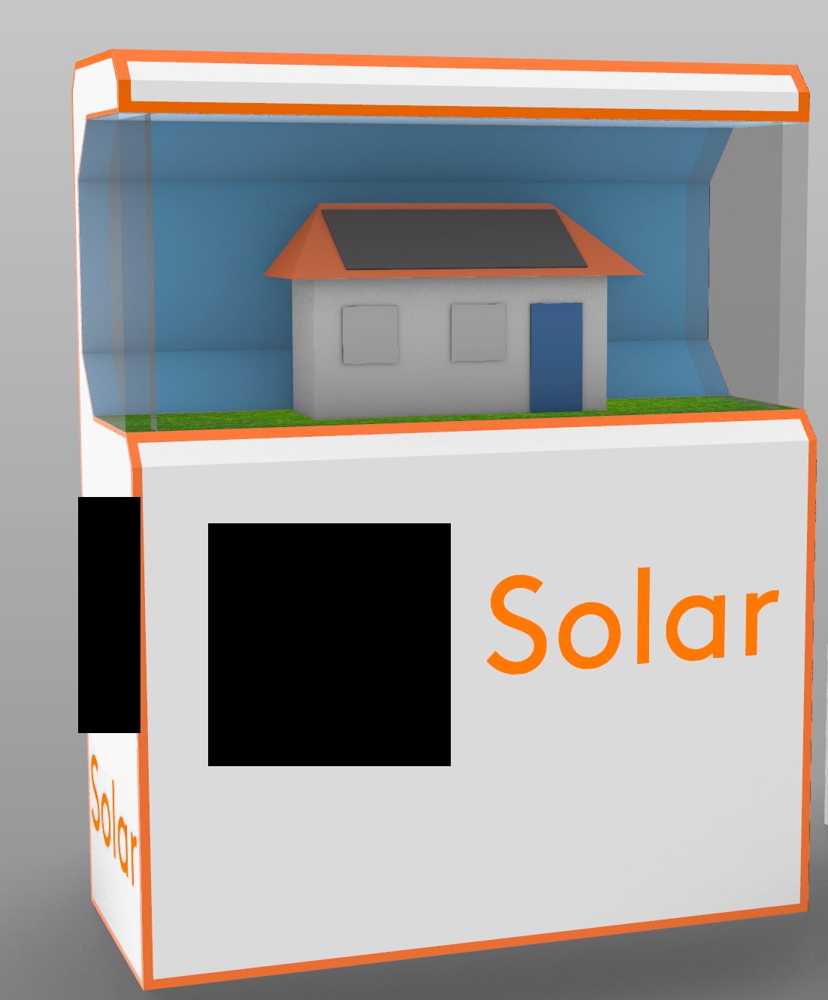Making Marketing Materials for a Client
- Rhino
- Working with Customers
- Teamwork
Note: The client’s name, logo, and identifying slogan have been redacted from the images and text due to an active NDA.
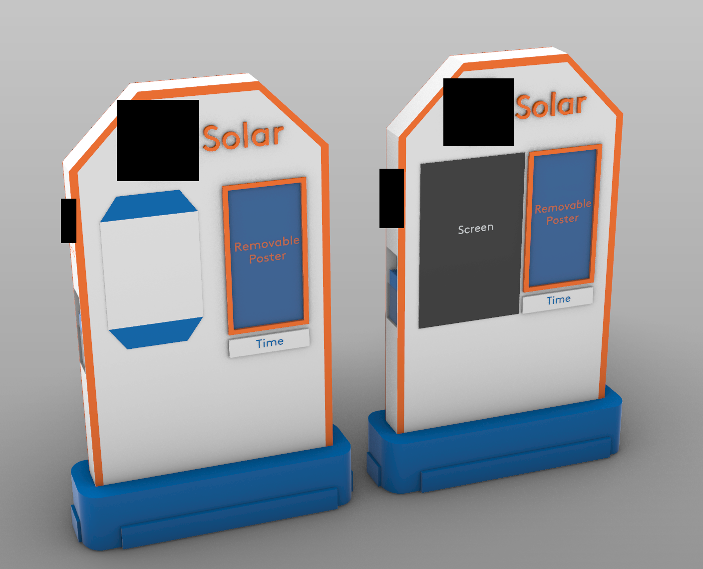I created this project during an internship at Zooka Creative, a marketing agency. While I had some smaller projects I worked on at Zooka as well, my biggest focus was creating a few types of in-store displays for an upcoming launch of a solar business for a major company. One display was designed to be thin and manned by an employee and it gave me my first taste of working with a client and their project constraints. When designing this within Rhino, I went through dozens of designs in a very short period of time.
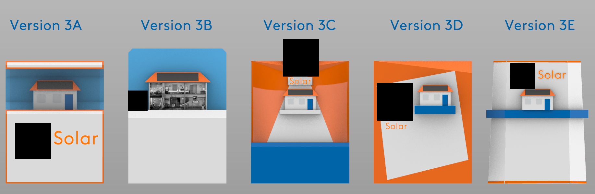When going through this process, I made sure to have at least the prior few iterations available at all times, as well as their individual components. This not only enabled me to iterate off of the previous design very easily, but I also was able to grab components from prior designs if I ended up preferring them after all. The second display was more involved and larger, although many of the specific decisions, such as creating a model home, were my own. I went through a similar process as I did with the first design, although I received feedback more often since the design was more involved. The first prototype that I showed off to the client in a meeting was lauded by not only the client, but the rest of my Zooka co-workers. Out of all of the designs shown to the client, mine was selected to be further developed into a full product.
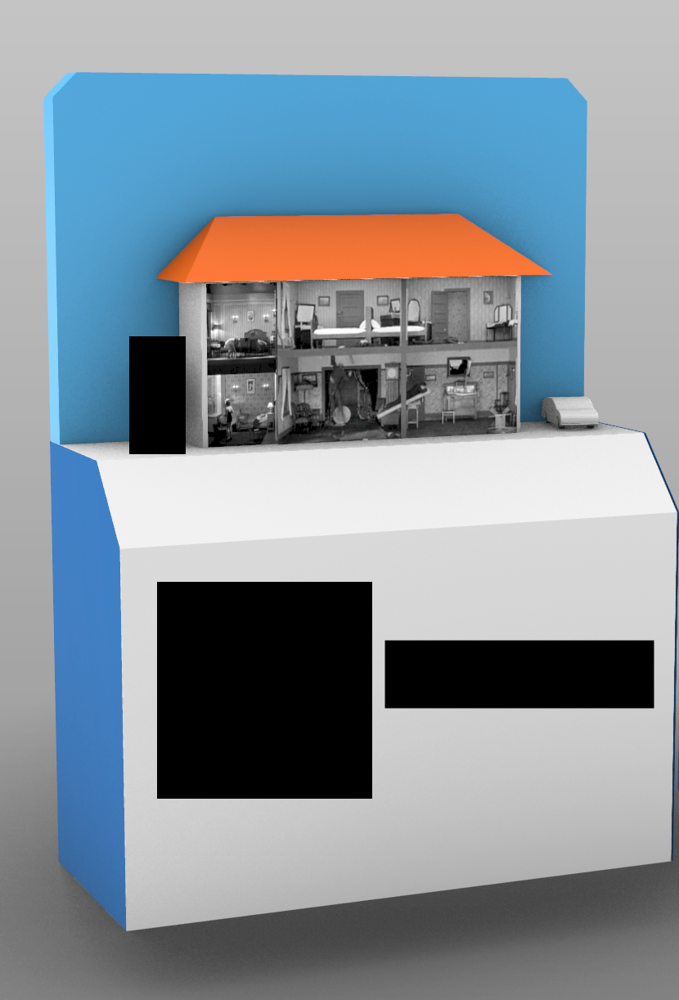I continued to develop the prototype on my own as well as work with our content team to add graphics and make appropriate changes to make the display more “store ready”. This involved creating a blueprint that included not only the design at all angles, but an “unfolded” iteration. Although I concluded my internship at Zooka before the project was completed, I last heard that my prototype was intended to be produced into a full model and displayed at the client’s headquarters.
Ludo Learn
Winter to Summer 2021
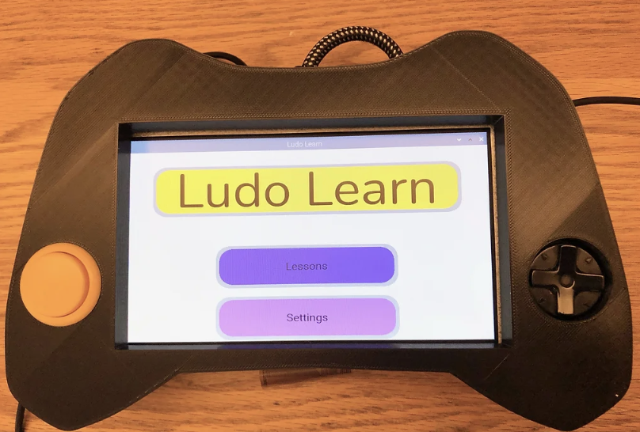Building a Handheld Educational Device from Scratch
- User Research
- Electronics
- High-Fidelity Prototyping
During my junior year at Rensselaer Polytechnic Institute, I was given the opportunity to design something on my own with very few restrictions. I wasn't exactly sure in what space I'd be working, but I knew that I wanted it to involve a controller or handheld device so I could see if they were as enjoyable to design as I hoped they would be. With this in mind, after eight months of on and off work, I created Ludo Learn. Ludo Learn is a system that enables "enhanced education", learning beyond the classroom, in low income, low infrastructure areas.
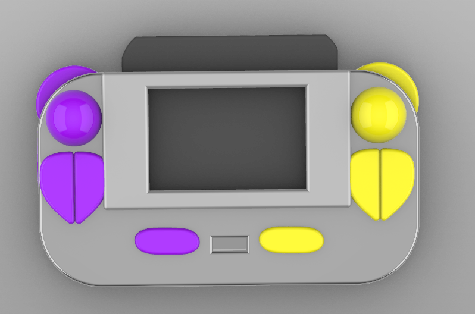Before even beginning work on the design, I did particularly extensive research on educational software and “edutainment”. A large part of this was creating a survey that I sent out to multiple middle school teachers who then shared it with their students, getting hundreds of responses as a result, all of which helped guide my design going forward.
The hardware went through a few major iterations, with the first couple focusing on putting the functionality of a mouse within the form factor of a handheld. I did this since I wanted it to feel less like a video game system and closer to a traditional computer, but after user feedback and testing, I focused more on the overall shape of the design and only the most important ways the user would interact with the device.
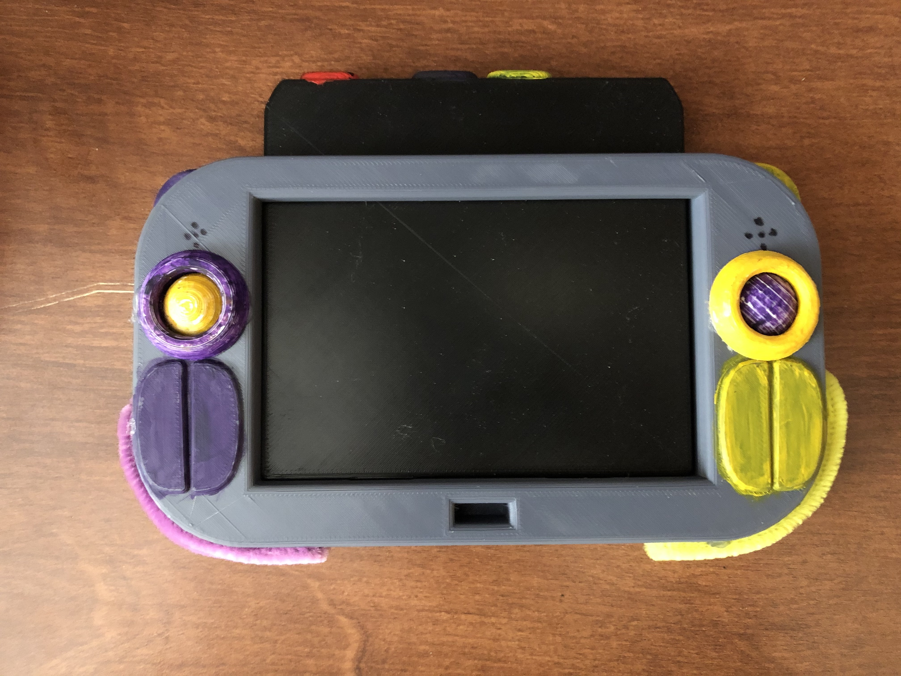Throughout the process, I was slowly self-learning some basic electronic skills that would enable me to get the hardware to interface with the software for my final prototype, and after getting the right components and connecting them together in the correct way, I had a fully functioning handheld device. Alongside a friend, I developed some basic software that could run on the device and be demoed, giving a clear picture of what the device would be like.
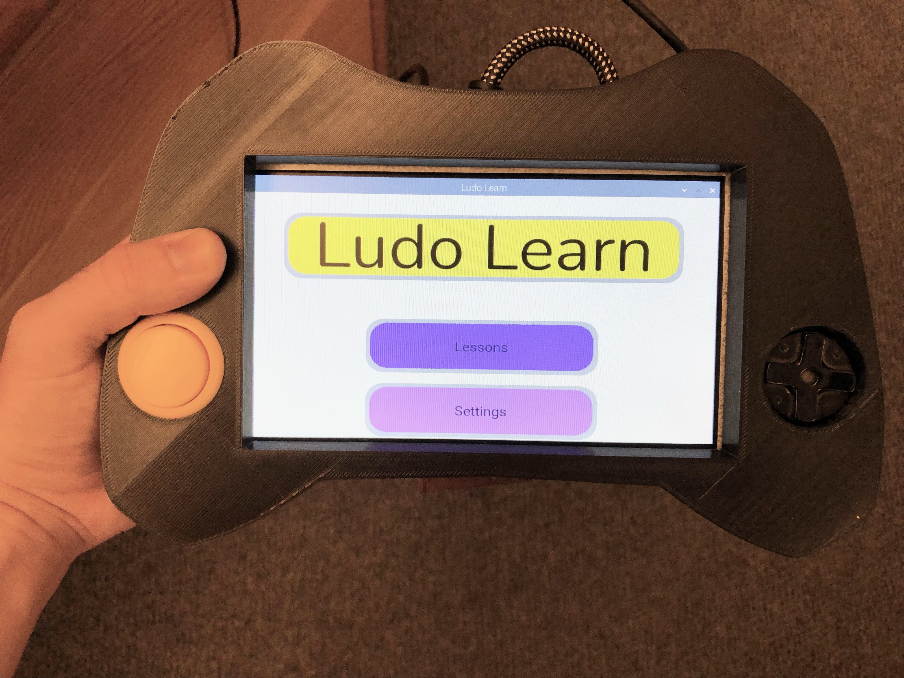Gasket
Summer 2024
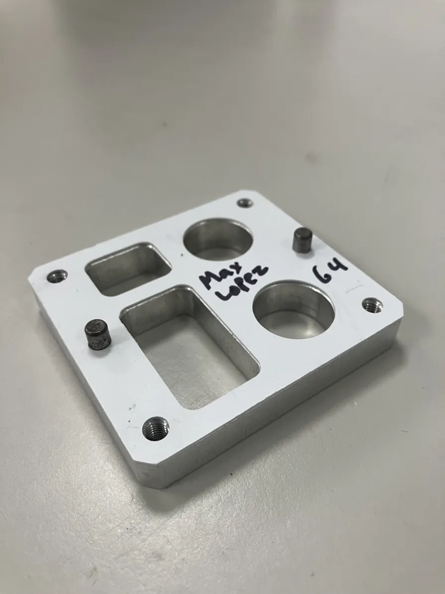Creating a Cover That Fits Like a Glove
- CNC Milling
- Solidworks
- CAM Software
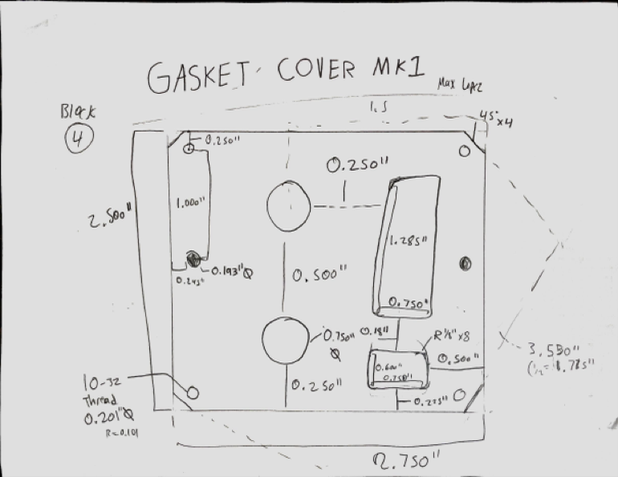
Another project from Summer 2024 was to create a gasket cover with one goal in mind: precision. Since gasket covers can be used in a wide array of mechanical designs, including some where errors of a fraction of a millimeter matter, ensuring that the otherwise simple gasket cover has the exact dimensions needed is of the utmost importance. I began by taking a multitude of measurements from the gasket using a caliper, making sure to take each measurement a few times to ensure accuracy. I then created a sketch primarily to note all of my measurements, especially since if I got all of the measurements right, I technically wouldn't even need the sketch, but of course I created one anyway just to keep everything straight.
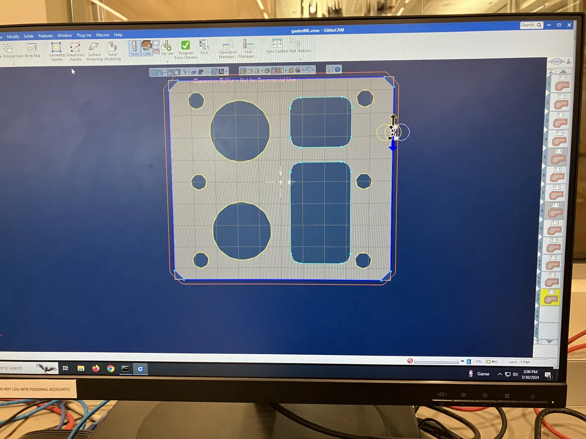 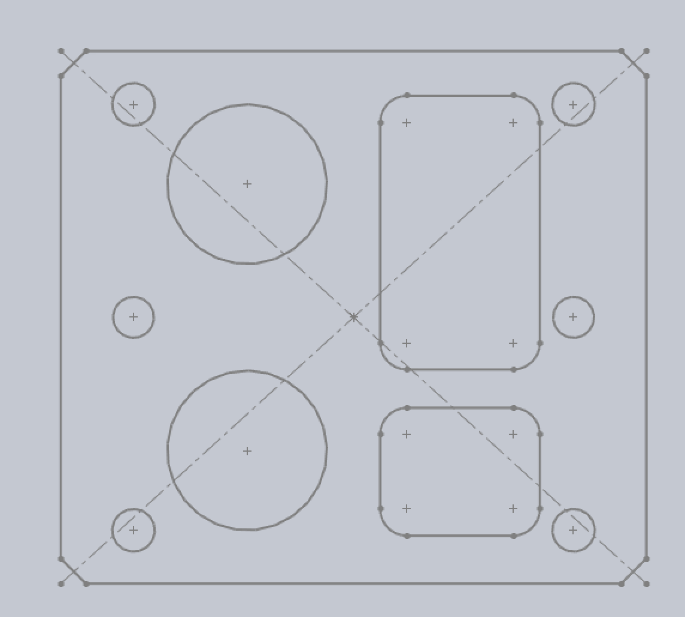I was then able to quickly create a sketch in Solidworks of the gasket cover. After finishing the CAD sketch, I used GibbsCAM to prepare the part for machining in BU's EPIC.
Almost immediately after milling the first iteration, I knew something was wrong. I quickly discovered that the holes on the sides were significantly misaligned. This seemed to have something to do with the radius/centering of the circles due to the distance of the misalignment.
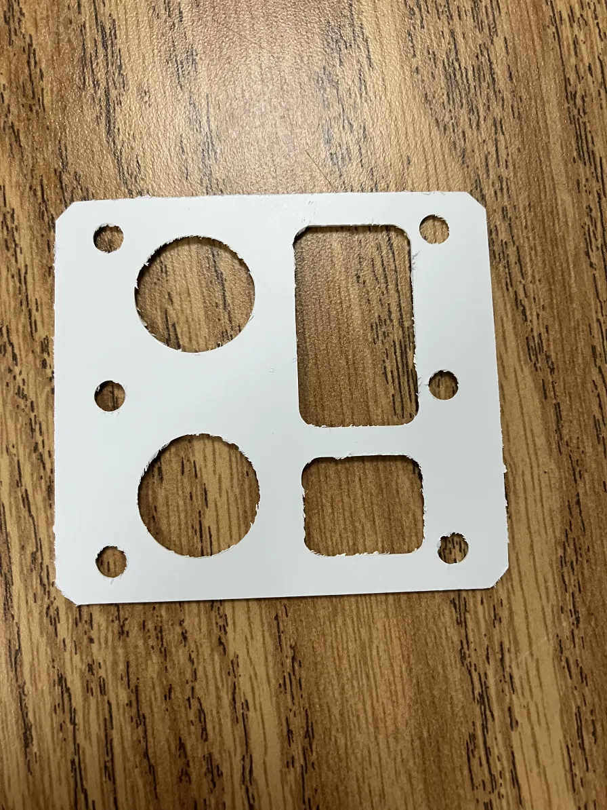
After noticing my blunder, I quickly corrected the error within the CAD model and returned to EPIC to mill another cover. While this second iteration initially seemed to fit correctly, I later found out I had made two small yet important errors. Firstly, I had made the diameter of the larger circles slightly larger than they were supposed to be. Secondly, when I was correcting the spacing of the side holes, I had still left them slightly too close to each other.
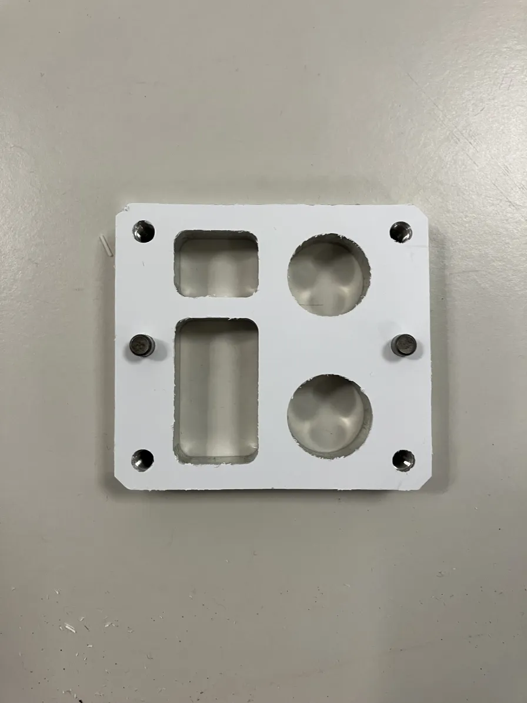After taking further measurements and making the necessary modifications, I milled a third and thankfully final iteration of the gasket cover. Overall, considering the speed at which this was completed and accuracy by the end, I think this was a fairly successful project. That being said, it became clear to me that measuring the gasket multiple times wasn't enough, and I should have additionally focused on checking the measurements at each stage of the process, since they may have been recreated slightly incorrectly at one stage in the process and never noticed until it was too late.
Columbo Coffee Collection
Winter and Spring 2020

Recontextualizing an Iconic Designer’s Work
- Adaptability
- Rhino
- Modular Component Design
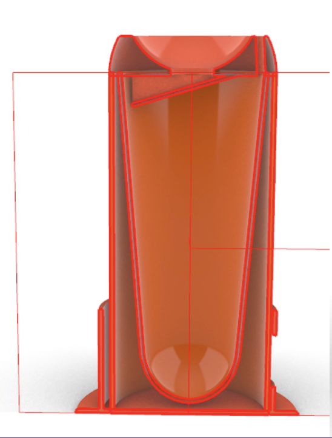
This class project took place over seven weeks, and had a very specific goal: To design a set of three objects which will help prevent burns from coffee spills in the style of designer Joe Colombo. The combination of the COVID-19 lockdown occurring in the middle of this project, as well as my working with a partner for this particular project, resulted in an interesting change of pace compared to my previous design work up to this point. My partner and I were already locked down in our separate homes by the time we created our first physical prototypes, so we could only use pictures to show one another our concepts. We worked on a lid, cup, and coaster combo set that would minimize coffee burns. My partner worked mainly on the cup, and I worked on the other two components, the lid and the coaster.
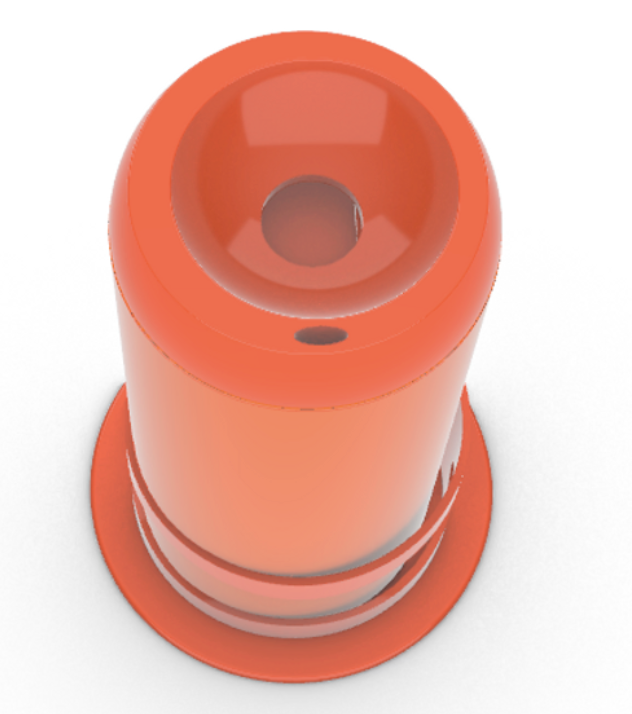In the first iteration, I failed to show one of the key features of the lid component, the liquid retrieval/guard system, and this resulted in subpar feedback from our peers. After this setback, I decided to take a 3D model approach sooner than I had planned, and this was the right call. Despite the much more positive feedback from our peers regarding this second iteration, a change arose that would need to be made to the lid which would require the entire lid to be remade, not just modified or copied. After about an hour, I managed to perfectly replicate the lid and make the change that was needed. This project allowed me to expand and show my proficiency with the Rhino CAD software, especially my ability to relate new aspects of a model to the older ones. This was not only demonstrated when I replicated the lid perfectly, but also when I had to fit the coaster and lid around the cup, which had been made separately from the other two components.